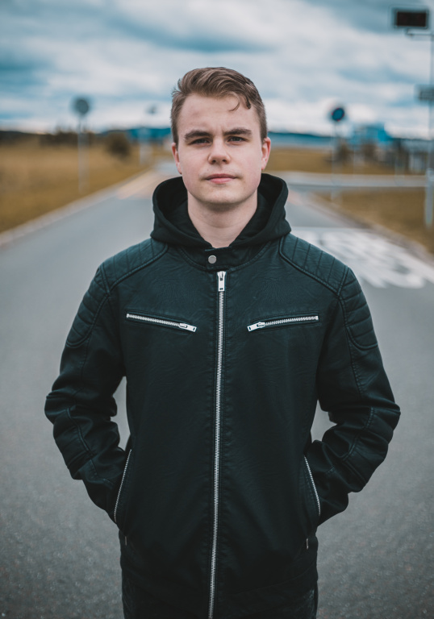

Kdo jsem?
Jmenuji se Jan Dohnal, jsem fotograf. Fotím už od roku 2018, kdy jsem si koupil svou první zrcadlovku. Zamiloval jsem se do focení, fotografie se pro mě stala vším, od té doby můj život nabral jiný směr. Ve fotografii nacházím radost, kterou chci předávat klientům. Vzpomínky jsou přece důležité, je dobré mít je zachycené.
Jaké služby nabízím?
Zaměřuji se hlavně na portrétové focení, ale fotím rád i rodinné oslavy, akce i domácí mazlíčky.
Co ode mne můžete očekávat?
Dochvilnost, profesionalitu, lidský přístup a kvalitní fotografie.
